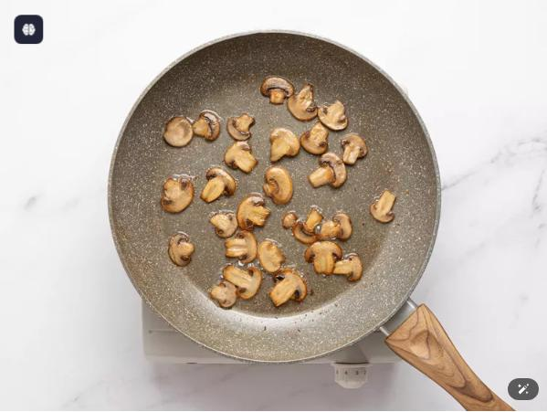

Home
Ground Beef Stroganoff noodles

Description
These ground beef stroganoff noodles are a shortcut versionof classic beef stroganoff in a one-pan version. The ultimate comfort food with flavourful ground beef, mushrooms, and egg noodles
Ingredients
- 1 tablespoon unsalted butter
- 1 tablespoon vegetable oil
- 1 cup thinly sliced mushrooms
- 1 teaspoon salt, plus more to taste
- ½ cup diced onion
- 1 pound ground beef
- freshly ground black pepper
- 1 pinch cayenne pepper
- 2 cloves minced garlic
- 1 ⅓ tablespoons flour
- 2 tablespoons vodka (Optional)
- 2 ½ cups beef broth, or as needed
- 1 cup water
- 2 ½ cups egg noodles
- ½ cup sour cream, plus more for serving
- 2 tablespoons fresh sliced chives or green onions
Directions
Steps
- Gather all ingredients.
- Melt butter and oil in a skillet over medium-high heat. Add mushrooms, season with salt, and saute, stirring occasionally, until they turn golden brown, 5 to 10 minutes.

- Add onion and ground beef. Cook, stirring, until meat is browned and crumbly, and onions turn soft and translucent, about 5 minutes. Season with black pepper and cayenne.
- Stir in minced garlic and flour, and cook for 1 minute.
- Pour in vodka and allow to evaporate, about 30 seconds.
- Stir in beef and water and bring to a simmer. Cook, stirring occasionally, for 10 minutes.
- Reduce neat to medium, and mix in noodles. Cover with a tight fitting lid and simmer for 5 minutes. Uncover and stir thoroughly. Cover again and cook until noodles are just tender, about 3 minutes.
- Once noodles are cooked, reduce heat to low, and stir in sour cream.
- Serve immediately with additional sour cream and green onions